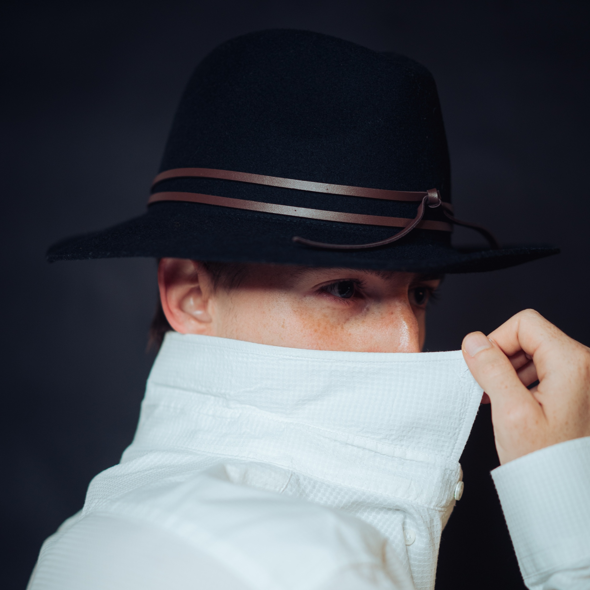

Shawn Pinciara, male, born the 10/02/2000, in Milan, Italy.
Temperature and humidity soil sensors for agricultural research: C++ embedded development for microcontrollers and IoT devices with a custom PCB and a custom enclosure, with a web dashboard to monitor the data and manage the devices remotely. LORAWAN and RS485 technologies.
I'm teaching a course on the social-cultural impact of AI and the technical aspects of neural networks in high schools.
Part of the PNRR Italian minister of culture project, I've been also teaching STEM technologies (such as Arduino, videomaking) to high school teachers.
Main languages used:
Other side technologies/skills include:
During my stay at HABITS I acquired the knowledge to bridge technologies, hacking various appliances and use them inside industrial design products prototypes. These bridges involve programming microcontrollers to create custom lighting effects or handling sensors with the various comm protocols such as I2C, I2S, SERIAL, SPI.
Various range of works using social technologies to promote these companies.
Degree in computer science for the new media communications, with a thesis on a capacitive 2-axis MIDI instrument "A multi-touch control surface implemented as a MIDI controller", despite graduating in New Media Communication, I wanted to make a formal bridge with a passion of mine (music) by writing a thesis in collaboration with the LIM (Milano Statal University's Music Informatics Laboratory).
Meanwhile studying for University I've done various freelance work on social media communication and event organizing.
Main languages used:
A one year contract (2019) with MBE as an IT Assistant, where I was put to do data entry, bridging data manually through different platforms. I then started to automate these processes using Python and APIs to automatically take data from servers and DBs, rearrange and correct them, and send them back to the other platforms. Through this experience I learnt how much I love to make processes much more efficient. During the year at MBE I became proficient in scripting with Python and PowerShell/Bash scripting to automate data copying between different web platforms using different APIs.
I'm really interested in developing efficient tools to bridge technologies, and I'm trying to stay
in different environments to always be inspired.
I have different passions that I try to nurture with work, I love to always understand more about
a concept or an idea to continuously expand my knowledge and my skills.
While I'm certain of not being super skillful in only one thing in particular, I think being multi-disciplinary
enriches the ability to juggle different tasks and being able to actively jump in different environments.
Degree in computer science for new media communications.
Grammar B2, Listening/comprehension C1.
High school diploma – 13th grade.
Middle school diploma – 8th grade.
I'm interested in tech, jazz/fusion music and performing arts.
These spaces allow me to experiment in different directions and relax.
While probably these passions won't ever become a job, I still try to nurture
them and use that to connect with people.
It has been many years now that I have been volunteering in a youth center to organize
cultural events, and I think volunteering doing a thing I love is such a good "giving back" to the community
and myself too.